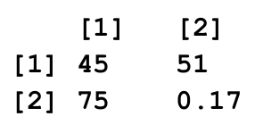

x <- c(3, 5, 7)
y <- c(1, 9, 11)
print(x + y)1 Operações Básicas
1.1 Questão 01 [DPF 2018]
| Informações | |
|---|---|
| Ano | 2018 |
| Órgão | Departamento de Polícia Federal |
| Cargo | Agente de Polícia Federal |
| Número na prova | 93 |
| Tipo de questão | Duas alternativas, uma resposta (C, E) |
| Resposta correta | E |
Considere o programa a seguir, escrito em R.
Após a execução do programa, será obtido o seguinte resultado.
[1] 36
Alternativas:
C - Correto
E - Errado
Solução
Operadores
<- e ->
Também chamado de função assign, os operadores <- e -> definem um objeto no lado esquerdo ou direito da chamada em código. Exemplos:
# uso tradicional do operador assign
x <- 1
# uso inverso do operador assign (não recomendado)
5 -> ySaiba que, apesar de não ser recomendado, o símbolo = tem o mesmo uso que <- e ->. Assim, o código anterior é equivalente a:
# uso do operador =
x = 1
y = 5
Função c()
Uma dos operadores mais usados no R. O termo c significa concatenate (concatenar, agrupar) e serve para combinar valores em um vetor atômico onde todos elementos são da mesma classe. A função c() serve tanto para combinar elementos individuais, quanto para combinar vetores já existentes (veja terceira linha do código).Exemplos:
# definição de vetores com c()
x <- c(1, 5)
y <- c(5, 2, 11)
z <- c(x, y, 9)Uma propriedade de c() é que a função força todos os elementos da saída a serem da mesma classe. Se, por acaso, misturarmos classes, diferentes, o R busca converter os elementos individuais para a classe mais complexa. Veja o exemplo abaixo, onde misturamos um texto com números:
# exemplo de conversão de elementos com c()
x <- c(1, "abc")
print(x)R> [1] "1" "abc"Aqui, a classe de caractere é mais complexa, forçando a conversão. Veja que a saída é um vetor do tipo caractere. O primeiro elemento, o qual era originalmente um valor numérico, torna-se um texto.
Operadores de soma
+
Um dos operadores matemáticos mais utilizados no R, o operador de soma serve para somar elementos de objetos diferentes.
# uso o operador de soma +
x <- 1:5
y <- 6:10
print(x + y)R> [1] 7 9 11 13 15Na adição de vetores, é importante saber que as operações são sempre efetuadas elemento por elemento. Veja o exemplo acima, onde o primeiro elemento do vetor de saída é a soma dos primeiros elementos de x e y.
Outra propriedade importante no uso do operador de soma é a regra de reciclagem, a qual define como vetores de tamanhos diferentes são somados. Veja ?sec-regra-reciclagem para mais detalhes.
Função print()
O comando print() mostra algum resultado no prompt do R. Comumente, utiliza-se o print() para averiguar se o código executado está correto. A função print() é adaptável, e pode ter diferentes comportamentos de acordo com a classe do objeto que está sendo apresentada no prompt. Veja alguns exemplos abaixo:
# exemplos de print()
print(1)R> [1] 1print("abc")R> [1] "abc"print(1:10)R> [1] 1 2 3 4 5 6 7 8 9 10print(data.frame(x = 1:3, y = 2:4))R> x y
R> 1 1 2
R> 2 2 3
R> 3 3 4Outro ponto importante aqui é que o comando print() é automaticamente utilizado quando o nome do objeto é executado no prompt. Assim, o comando print(x) é equivalente a simplesmente x:
x <- 10
# `x` é equivalente a `print(x)`
xR> [1] 10Portanto, em uma questão de concurso, ao ver um objeto sozinho em sua própria linhas, saiba que o comando print() é executado automaticamente, mostrando uma representação do objeto no prompt.
O enunciado da questão está errado. Caso executarmos o código, veremos que a saída não é o valor 36, mas sim um vetor com a soma dos elementos individuais de x e y. Para explicar, considere o código comentado abaixo.
- 1
-
O comando
<-define um objeto no lado esquerdo do código. A função c() combina valores para definir um vetor atômico, onde todos elementos possuem a mesma classe. Neste caso, o objeto com nomextoma o valor dec(3, 5, 7), enquantoytoma o valor dec(1, 9, 11). - 2
-
o resultado da soma é apresentado com o comando print() , o qual mostra um resultado no prompt do R. No R, uma soma de vetores é realizada elemento por elemento. Por exemplo, ao somarmos
c(1, 2)comc(3, 4), o resultado éc(1+3, 2+4), isto é, 4, 6. Portanto, voltando ao problema, ao somarmosxcomy, o resultado é c(4, 14, 18).
Executando o código, temos o seguinte resultado:
print(x + y) R> [1] 4 14 18Como podemos ver a, a saída do código é [1] 4 14 18, e não 36.
1.2 Questão 02 [DPF 2018]
| Informações | |
|---|---|
| Ano | 2018 |
| Órgão | Departamento de Polícia Federal |
| Cargo | Agente de Polícia Federal |
| Número na prova | 94 |
| Tipo de questão | Duas alternativas, uma resposta (C, E) |
| Resposta correta | E |
Considere o programa a seguir, escrito em R.
x <- TRUE
y <- FALSE
print (xy)Após a execução do programa, será obtido o seguinte resultado.
[1] FALSE
Alternativas:
C - Correto
E - Errado
Solução
Conceitos Prévios
- Uso de
<- - veja conceito na Section 1.1
- Função print()
- veja conceito na Section 1.1
Objetos do tipo lógico (
TRUE | FALSE)
Objetos do tipo logical servem para indicar eventos verdadeiros (TRUE) ou falsos (FALSE). Veja que, na linguagem R, o nome TRUE e FALSE são reservados e válidos para a definição de objetos e vetores. Geralmente, estes são saídas de testes de condições sobre objetos. Por exemplo, se testarmos no prompt do R que 1 > 2, o resultado é FALSE. O mesmo teste pode ser realizado para vetores, elemento por elemento. Neste caso, a saída é um vetor lógico (e não valor único). Veja exemplos abaixo:
# exemplo de teste lógico
print(1 > 2)R> [1] FALSE# exemplo em vetores
x <- 1:5
print(x < 3)R> [1] TRUE TRUE FALSE FALSE FALSEO enunciado da questão está errado. Um olho treinado facilmente percebe que, no comando print (xy), não existe operador entre as variáveis x e y. O código apresentado terminaria a sua execução com um erro. Ao executar o código, o interpretador do R entende que xy é um objeto por si só. Obviamente o mesmo não existe e, portanto, a execução do código resultaria em uma mensagem de erro: “Error: object ‘xy’ not found”. A maneira correta de executar o código seria definir algum operador entre x e y, tal como print(x+y) ou print(x*y), os quais, respectivamente, iriam somar ou multiplicar os elementos de x e y.
Dica do Perlin
Aqui um ponto importante. Note que o comando print (xy) não tem espaço entre o print e (xy). Isto não é usual em programação do R, porém o compilador executa sem problemas. É impossível saber se isso foi “pegadinha” do autor da questão, ou simplesmente um erro de edição. De qualquer maneira, lembre que, neste caso específico de chamar uma função, é válido, mas não comum, adicionar um espaço entre o nome da função e o primeiro parêntese.
1.3 Questão 03 [DPF 2018]
| Informações | |
|---|---|
| Ano | 2018 |
| Órgão | Departamento de Polícia Federal |
| Cargo | Nível Superior |
| Número na prova | 43 |
| Tipo de questão | Duas alternativas, uma resposta (C, E) |
| Resposta correta | C |
Com relação à programação R, julgue os itens que se seguem.
helloStr <- "Hello world!"
print(helloStr) Nesse caso, após a execução dos comandos, será obtido o resultado a seguir.
[1] “Hello world!”
Alternativas:
C - Correto
E - Errado
Solução
Conceitos Prévios
- Uso de
<- - veja conceito na Section 1.1
- Função print()
- veja conceito na Section 1.1
Objetos do tipo caractere (texto)
Objetos do tipo character servem para representar textos no R. A criação dos mesmos se dá pelo uso de aspas duplas ou simples:
# exemplo de criação de objetos do tipo texto
x <- "abc"
y <- 'cba'
z <- c("a", "b", "c")O R oferece uma ampla gama de operações com objetos de texto. É possível procurar por letras e padrões específicos de texto, quebrar texto com base em um símbolo, e várias outras operações. Veja capítulo 7 de Perlin (2021) para mais detalhes sobre as principais operações disponíveis para objetos do tipo texto.
O enunciado da questão está correto.
- 1
-
a primeira etapa é a definição de variáveis no R:
helloStr <- "Hello world!". Veja que, para o R, sempre que texto é envolvido por aspas duplas (ou simples), o objeto criado é do tipocharacter(ou caractere/texto). - 2
- Ao usarmos o comando print() para um objeto do tipo texto, a saída é o texto em si. Portanto, ao rodarmos o código do enunciado, o resultado é exatamente [1] “Hello world!”:
R> [1] "Hello world!"1.4 Questão 04 [MJSP 2020]
| Informações | |
|---|---|
| Ano | 2020 |
| Órgão | Ministério da Justiça e Segurança Pública |
| Cargo | Analista (Superior) |
| Número na prova | 36 |
| Tipo de questão | Cinco alternativas, uma resposta (a, b, c, d, e) |
| Resposta correta | d |
Um analista do MJSP necessita criar a seguinte matriz em linguagem R:

Sabendo disso, assinale a alternativa que apresenta corretamente o código que o analista deverá escrever em linguagem R.
Alternativas:
a ) array(data=c(45,75,51,0.17),nrow=2,ncol=2).
b ) array(c=(45,75,51,0.17),row=2,col=2).
c ) data=c(45,75,51,0.17),nrow=2,ncol=2.
d ) matrix(data=c(45,75,51,0.17),nrow=2,ncol=2).
e ) matrix(c=(45,75,51,0.17),row=2,col=2).
Solução
Função matrix()
Esta serve para criar matrizes no R. Uma matriz nada mais é do que um conjunto de valores numéricos organizados em um objeto de duas dimensões, uma tabela, com linhas e colunas. Estas são geralmente utilizadas para simplificar operações matemáticas.
Para criar uma matriz com matrix() , basta indicar os valores a serem preenchidos, e o tamanho da matriz desejada:
# cria matriz com 4 linhas e 3 colunas
matrix(data = 1:12, nrow = 4, ncol=3)R> [,1] [,2] [,3]
R> [1,] 1 5 9
R> [2,] 2 6 10
R> [3,] 3 7 11
R> [4,] 4 8 12# cria matriz com 3 linhas e 4 colunas
matrix(data = 1:12, nrow = 3, ncol=4)R> [,1] [,2] [,3] [,4]
R> [1,] 1 4 7 10
R> [2,] 2 5 8 11
R> [3,] 3 6 9 12Note que a ordem de preenchimento da matriz segue a ordem das dimensões: primeiro as linhas, e depois as colunas. Isso é importante pois define os elementos da matriz criada, e pode ser conhecimento necessário para a resolução de questões de concurso.
Função array()
Este comando é semelhante a matrix() , porém sem a restrição no número de dimensões. A função array() pode criar objetos com qualquer número de dimensões, enquanto matrix() é restrita a duas.
# cria objeto com 2 dimensões
array(data = 1:12, dim = c(4, 3, 1))R> , , 1
R>
R> [,1] [,2] [,3]
R> [1,] 1 5 9
R> [2,] 2 6 10
R> [3,] 3 7 11
R> [4,] 4 8 12# cria objeto com 3 dimensões
array(data = 1:16, dim = c(2, 2, 2, 2))R> , , 1, 1
R>
R> [,1] [,2]
R> [1,] 1 3
R> [2,] 2 4
R>
R> , , 2, 1
R>
R> [,1] [,2]
R> [1,] 5 7
R> [2,] 6 8
R>
R> , , 1, 2
R>
R> [,1] [,2]
R> [1,] 9 11
R> [2,] 10 12
R>
R> , , 2, 2
R>
R> [,1] [,2]
R> [1,] 13 15
R> [2,] 14 16Veja que o argumento dim indica a quantidade e o tamanho de cada dimensão na forma de um vetor. Assim como para a função matrix() , os elementos individuais também são preenchidos seguindo a ordem das dimensões.
A resposta correta é a alternativa d) matrix(data=c(45,75,51,0.17), nrow=2, ncol=2).
A forma mais usual de criação de matrizes no R se dá pelo uso da função matrix() . Porém, função array() também possibilita a criação de matrizes. A diferença é que matrix() é restrita a objetos com duas dimensões (matrizes e vetores), enquanto array() permite a criação de objects com qualquer número de dimensões, incluindo matrizes (2 dimensões), ou arrays com número k de dimensões.
Assim, o nome da função, isoladamente, não permite resolver o problema, mas já indica o caminho. Sabendo que apenas funções matrix() e array() podem criar matrizes, já podemos excluir com segurança a alternativa c).
O próximo passo é analisar as entradas utilizadas para as funções em cada alternativa. Saiba que ambas as funções compartilham o argumento data, porém apenas matrix() se utiliza das entradas nrow e ncol. Explicando com exemplos, podemos criar uma matriz com a função array() com o código abaixo:
# criação de array com 2 dimensões
array(data=c(45,75,51,0.17), dim = c(2, 2))R> [,1] [,2]
R> [1,] 45 51.00
R> [2,] 75 0.17o qual resulta em objeto equivalente a solução do problema:
# criação de matriz com 2 dimensões
matrix(data=c(45, 75, 51, 0.17), nrow = 2, ncol = 2)R> [,1] [,2]
R> [1,] 45 51.00
R> [2,] 75 0.17
Dica do Perlin
Nota-se um certo gosto dos avaliadores em questões relativas a criação de matrizes. Assim, memorize os argumentos das funções matrix() e array() , e lembre também que, na criação de uma matriz, a ordem dos elementos do objeto de saída segue a ordem das dimensões: primeiro preenche-se as linhas da primeira coluna, depois as linhas da segunda coluna e assim por diante.
Outro ponto importante é que, para ambas as funções, pode ocorrer a reciclagem de elementos (veja ?sec-regra-reciclagem) caso o número de valores na entrada em data não sejam suficientes para preencher o objeto desejado. Em resumo, o R repete o vetor de entrada quantas vezes for necessário para preencher a matriz inteira. Veja o exemplo abaixo, onde argumento data é igual a c(1, 2), com nrow=2 e ncol=2. Claramente, o vetor de entrada não tem elementos suficientes para preencher os quatro elementos de uma matrix com duas linhas e duas colunas. Assim, seguindo a regra de reciclagem, o vetor c(1, 2) é repetido uma vez para preencher a matriz. Veja o resultado abaixo.
# exemplo de reciclagem de valores em matrizes
matrix(c(1, 2), nrow = 2, ncol = 2)R> [,1] [,2]
R> [1,] 1 1
R> [2,] 2 21.5 Questão 05 [MJSP 2020]
| Informações | |
|---|---|
| Ano | 2020 |
| Órgão | Ministério da Justiça e Segurança Pública |
| Cargo | Cientista Social |
| Número na prova | 59 |
| Tipo de questão | Cinco alternativas, uma resposta (a, b, c, d, e) |
| Resposta correta | b |
A linguagem R é uma poderosa linguagem para se trabalhar com dados. Assinale a alternativa que apresenta somente funções da Linguagem R.
Alternativas:
a ) input(), output(), floor(), avg().
b ) mean(), summary(), quantile(), var().
c ) sum(), avarage(), clean(), goto().
d ) class(), vetor(), sum(), min().
e ) for(), loop(), data(), math().
Solução
A resposta correta é alternativa b) mean(), summary(), quantile(), var().
Esta é uma questão que exige certa memorização. O R possui um conjunto imenso de funções em seus módulos e, certamente, até mesmo usuários avançados teriam dificuldade em memorizar todos os nomes das funções disponíveis. Porém, com alguns atalhos, é possível chegar na resposta correta sem necessitar um esforço de memorização.
Para começar, vamos olhar quais alternativas e funções realmente existem no R. Aquelas que não existem são sobrescritas abaixo:
input(),output(), floor(),avg().mean(), summary(), quantile(), var().
sum(),
avarage(),clean(),goto().class(),
vetor(), sum(), min().for(),loop(), data(),math().
Primeiro, lembre que a função de calcular média no R é mean() . Esta tende a ser parte da primeira lição aprendida no R, e um conhecimento bastante acessível. Assim, os nomes avg() da alternativa (a) e avarage() (sim, tem erro de digitação) da alternativa (c) já poderiam ser excluídos.
Na alternativa (c), veja que existe o nome vetor, o qual é a tradução de vector para o português. Como as funções do R estão todas escritas em inglês, claramente esta também não pode ser a resposta correta. Note, porém, que todos os demais nomes da alternativa (c): class(), sum(), min() são nomes válidos de funções no R.
Na alternativa (e), note que o nome for() não é uma função, mas sim um nome reservado para iniciar um loop. E outra, loop é um conceito, e não função. Esta alternativa também pode ser excluída.
Assim, com um pouco de lógica, podemos chegar na resposta ou, no mínimo, excluir algumas alternativas, sem a necessidade de decorar todas as funções do R.
Dica do Perlin
Infelizmente, questões de memorização de nomes de funções no R são comuns em concursos públicos. Como professor, deixo aqui minha crítica a este tipo de questão “decoreba”, pois esta não medem o conhecimento de R de um candidato.
Porém um atalho pode ajudar. Suspeito fortemente que funções exigidas em concursos devem se limitar aos pacotes básicos do R, aqueles que são inicializados com o software. Por exemplo, pacote {base} é carregado no início da sessão do R, permitindo o uso direto de suas funções, tal como mean().
Assim, saiba que os pacotes automaticamente inicializados com o R são: {stats}, {graphics}, {grDevices}, {utils}, {datasets} e {base}. No mínimo, recomendo que o leitor se familiarize com as as principais funções do pacote {base} e {stats}.
1.6 Questão 06 [MJSP 2020]
| Informações | |
|---|---|
| Ano | 2020 |
| Órgão | Ministério da Justiça e Segurança Pública |
| Cargo | Cientista Social |
| Número na prova | 60 |
| Tipo de questão | Cinco alternativas, uma resposta (a, b, c, d, e) |
| Resposta correta | d |
Assinale a alternativa que apresenta o comando que informa à Linguagem R em qual pasta ela deve ler os arquivos de dados.
Alternativas:
a ) filter().
b ) select().
c ) read_fwf().
d ) setwd().
e ) library().
Solução
Função setwd()
Esta função modifica o diretório de trabalho em uma sessão do R. O seu nome é uma abreviatura da frase set working directory. A sua entrada é o diretório para onde a sessão do R deve se dirigir. Isto permite que arquivos de dados sejam importados com referência relativa. Por exemplo, imagine que existe um arquivo chamado dados.csv no diretório C:/Trabalho-R/. Para mudar o diretório e importar os dados na sua sessão, basta usar o código abaixo:
setwd("C:/Trabalho-R/")
df <- read.csv("dados.csv")A resposta correta é alternativa d) setwd(), a qual muda o diretório de trabalho em uma sessão do R. Para esclarecer e explicar a negativa das demais funções, segue abaixo uma descrição simplificada de cada:
- filter()
- Originária do pacote {stats}, esta função aplica um filtro linear a uma (ou mais) séries temporais. Este é um método estatístico de modelagem de dados. A função também é encontrada no pacote {dplyr} e, neste caso, serve para filtrar as linhas de um dataframe (veja ?sec-pipeline).
- select()
- Esta função não existe nos pacotes básicos do R, porém pode ser encontrada no {dplyr} . Neste caso, a função serve para selecionar colunas de um dataframe (tabela). O retorno da função é um outro dataframe com apenas as colunas selecionadas.
- read_fwf()
- Esta função também não existe nos pacotes básicos do R, porém pode ser encontrada no pacote {readr} . A mesma serve para importar dados de texto para sua sessão do R. O termo fwf significa fixed width file, arquivo de texto onde uma quantidade de espaços define a separação de colunas.
- library()
-
Função para carregar pacotes em uma sessão do R. Por exemplo, para carregar todas as funções do pacote {readr} , basta executar o comando
library(readr).
1.7 Questão 07 [DPF 2021]
| Informações | |
|---|---|
| Ano | 2021 |
| Órgão | Departamento de Polícia Federal |
| Cargo | Agente de Polícia Federal |
| Número na prova | 85 |
| Tipo de questão | Duas alternativas, uma resposta (C, E) |
| Resposta correta | E |
Com relação a conceitos de programação Python e R, julgue os itens que se seguem.
O resultado do código R seguinte será “12”.
f<- function(x) {
g <- function(y) {
y + z
}
z <- 4
x + g(x)
}
z <- 10
f(4)Alternativas:
C - Correto
E - Errado
Solução
Cuidado
Esta questão apresenta um enunciado complicado, e pode ser entendida de diferentes formas. O problema é que, ao rodar o código R, a solução é o valor numérico 12, e não o texto “12”. Relembre que, no R, ao colocar aspas duplas ou simples em um objeto, o valor é do tipo caractere (veja Section 1.3), e não numérico. Assim, se levarmos a risca o enunciado, o gabarito está errado, pois o tipo de objeto de saída não bate com o valor encontrado pelo código. Porém, se ignorarmos o uso de aspas duplas, o gabarito está correto, pois a saída do código apresentado é exatamente o valor 12.
Para manter a integridade e coerência do material do livro, o gabarito desta e de outras questões irá sempre levar a notação do R a risca. Assim, aceita-se a solução de que o enunciado está errado.
Funções customizadas no R
Todo usuário do R pode escrever suas próprias funções. Isto facilita a construção e manutenção de códigos. Conforme Perlin (2021), capítulo 8, abaixo seguem os principais pontos sobre a construção de funções customizadas no R:
- Toda função possui três partes conexas: as entradas, o processamento e a saída. As entradas são os argumentos definidos na instanciação da função. Por exemplo, para a função
fct <- function(arg1, arg2), os nomesarg1earg2são as entradas. O processamento ocorre no miolo da função, com o uso de chaves ({ }). Já a saída é definida com o comandoreturn(). Este define o fim da execução da função, e o retorno de um objeto para o usuário.
# exemplo de função customizada no R
fct <- function(arg1, arg2 = 5) { # entradas
# miolo da função (processamento)
print(arg1)
print(arg2)
out <- arg1 + arg2
# saída da função e retorno para usuário
return(out)
}O usuário pode definir as entradas de uma função tanto por posição quanto por nome. Veja que, na função anterior, a primeira entrada de fct() é
arg1e a segundaarg2. Assim, o comandofct(1, 2)é equivalente afct(arg2=2, arg1=1).O uso de igualdade nas definições de entrada, tal qual
f <- function(x = 1), registra o valor padrão (ou default) para o argumento em questão. Quando o usuário não usa o argumento, ele toma o valor padrão. Assim, o comandofct(1)é equivalente afct(1, 5), uma vez que o valor padrão dearg2é 5.Para rodar uma função customizada no R, primeiro é necessário registrá-la na sessão, isto é, rodar o código de definição da função. Caso a função não for registrada, o R retornará um erro indicando que a função não foi encontrada.
Escopo de objetos
O escopo de objetos define a forma como a plataforma R procura objetos na execução de códigos. Este é um tema que pode ser complexo, mas vou simplificar aqui. Primeiro, saiba que todo código R é executado em determinado ambiente de trabalho, chamado de namespace. Este ambiente muda ao executarmos código dentro de funções e carregarmos pacotes. Quando definimos um objeto em código, o R procura o valor da variável seguindo uma ordem própria sobre as áreas de trabalho (namespace), funções e pacotes:
Primeiro, o R procura pela variável no ambiente da função em que o nome é requisitado, incluindo entre as entradas da função.
Caso não encontrada, o objeto é buscado em quaisquer outras funções acima da função de requisição, seguindo a ordem de chamada do código.
Se não encontrada, o R procura pela variável no ambiente global, sua área de trabalho original. O ambiente global nada mais é do que a sessão do R que você iniciou.
Por fim, o R procura pelo objeto no ambiente (namespace) dos pacotes carregados na sua sessão.
É usando as regras anteriores que o R encontra os nomes de objetos e funções. Isso é importante pois define quais objetos são utilizados em cálculos. Note que é devido a esta propriedade que uma função de determinado pacote se torna disponível após carregarmos o módulo com a função library() . Primeiro o R procura pelo nome da função em todos os ambientes de trabalho, e depois encontra no ambiente do pacote.
A dinâmica do escopo de variáveis muda quando temos funções próprias no código. Saiba que cada função possui seu próprio ambiente de execução e, como foi destacado anteriormente, quando um objeto não é encontrado no ambiente de execução da função, o R procura sequencialmente nos demais ambientes, até chegar no ambiente global. Um exemplo vai elucidar. Considere o código a seguir:
1x <- "esse é x do ambiente global"
2fct_1 <- function() {
x <- "esse é x do ambiente da função"
print(x)
}
3fct_2 <- function() {
print(x)
}
fct_1()
fct_2()- 1
-
Variável
xé definida no ambiente global (fora da função) - 2
-
Função
fct_1define uma variável de mesmo nome,x, no ambiente da função, e mostra a mesma no prompt com função print() ; - 3
-
Função
fct_2não define uma variávelxno ambiente da função, mas mostra o valor dexno prompt.
R> [1] "esse é x do ambiente da função"
R> [1] "esse é x do ambiente global"Veja que, na chamada para fct_1(), o resultado é o valor de x no ambiente da função. Quando chamamos fct_2(), a qual não define x em nenhum momento, o retorno é o valor de x no ambiente global.
Para entender um pouco mais, veja o exemplo a seguir onde temos uma função definida dentro de outra função.
x <- "esse é x do ambiente global"
fct_3 <- function() {
x <- "esse é x do ambiente da função fct_3()"
fct_2 <- function() {
print(x)
}
fct_2()
}
fct_3()R> [1] "esse é x do ambiente da função fct_3()"Neste caso, como fct_2() foi definida dentro de fct_3(), a procura pela variável passa antes pelo ambiente de execução da função fct_3(), antes de chegar no ambiente de execução global. Assim, o valor de x é aquele definido em fct_3().
O enunciado está errado. O retorno do código é o valor numérico 12, e não o texto “12”. Esta questão envolve dois conceitos avançados no R: criação de funções customizadas e escopo de variáveis (veja definições acima).
Voltando a questão, explica-se a resolução com o comentário em código:
- 1
-
Após a chamada de
f(4), a função g() é definida na linha 2. - 2
-
Define o valor de
z <- 4, o qual, seguindo a lógica do escopo de variáveis, é o valor dezcriado no miolo da função f() e utilizado na função g(). Portanto, o resultado deg(x)é igual a 8. - 3
-
Consequentemente, a soma
x + g(x)da linha (4) é equivalente a4 + 8, resultando no valor 12.
Dica do Perlin
O tema de escopo de variáveis é muito propício de cair em concursos futuros. Me colocando no papel de autor de questões, veja que o enunciado da pergunta pode ser feito de forma enxuta, com complexidade flexível, e com gabarito inquestionável (é um simples código que pode ser rodado, dando sempre a mesma solução). Ao mesmo tempo, o assunto é complexo e pode filtrar candidatos bem preparados dos demais. Assim, aqui fica a recomendação de que entendas bem o conceito de escopo de variáveis no R, facilitando a resolução de potenciais futuras questões.
1.8 Questão 08 [AGERGS 2022]
| Informações | |
|---|---|
| Ano | 2022 |
| Órgão | Ag. Est. de Regulação dos Serv. Púb. Delegados do RS |
| Cargo | Engenheiro de Processamento Digital |
| Número na prova | 27 |
| Tipo de questão | Cinco alternativas, uma resposta (a, b, c, d, e) |
| Resposta correta | c |
Estamos interessados em ajustar um modelo de regressão linear simples no pacote estatístico R. O comando a ser utilizado para esse fim é:
Alternativas:
a ) ts
b ) glm
c ) lm
d ) cor
e ) road
Solução
Função lm()
Esta estima uma regressão linear com base em dados, tendo como saída os coeficientes estimados, assim como também alguns testes estatístico. A regressão linear é um dos modelos estatísticos mais simples, assumindo uma relação linear entre as variáveis do modelo. Veja o exemplo abaixo, onde criamos uma tabela com dados artificiais, e estimamos um simples modelo.
# cria um dataframe
dados <- data.frame(
x = c(1, 2, 5, 9, 5),
y = c(2, 6, 8, 3, 8)
)
# estima um modelo de regressão linear
my_lm <- lm(formula = y ~x, data = dados)
# mostra resultado
print(my_lm)R>
R> Call:
R> lm(formula = y ~ x, data = dados)
R>
R> Coefficients:
R> (Intercept) x
R> 5.15306 0.05612Para obter mais informações sobre o modelo estimado, usamos a função summary() .
summary(my_lm)R>
R> Call:
R> lm(formula = y ~ x, data = dados)
R>
R> Residuals:
R> 1 2 3 4 5
R> -3.2092 0.7347 2.5663 -2.6582 2.5663
R>
R> Coefficients:
R> Estimate Std. Error t value Pr(>|t|)
R> (Intercept) 5.15306 2.68100 1.922 0.15
R> x 0.05612 0.51406 0.109 0.92
R>
R> Residual standard error: 3.219 on 3 degrees of freedom
R> Multiple R-squared: 0.003957, Adjusted R-squared: -0.3281
R> F-statistic: 0.01192 on 1 and 3 DF, p-value: 0.92A solução é a alternativa c) lm, a qual estima uma regressão linear com base em dados (veja quadro acima). Para explicar a negativa das demais opções, abaixo apresenta-se uma explicação simplificada de cada um:
- ts()
- serve para criar objetos representam séries temporais.
- glm()
- função utilizada para a estimação de modelos generalizados (Generalized Linear Models).
- cor()
- função utilizada para o cálculo de correlação entre duas séries numéricas.
- road()
- esta função não existe nos pacotes tradicionais do R. A única menção encontrada é para a importação de dados de mortes relacionadas ao trânsito de estradas dos Estados Unidos (veja pacote {MASS} ).
1.9 Questão 09 [AGERGS 2022]
| Informações | |
|---|---|
| Ano | 2022 |
| Órgão | Ag. Est. de Regulação dos Serv. Púb. Delegados do RS |
| Cargo | Engenheiro de Processamento Digital |
| Número na prova | 28 |
| Tipo de questão | Cinco alternativas, uma resposta (a, b, c, d, e) |
| Resposta correta | e |
Quando usamos o símbolo “=” ou “<” seguido de “-” estamos criando objetos com um nome que aparece à esquerda e que contém alguns elementos (o que vem à direita do símbolo). Quando criamos um objeto, ele fica guardado na memória do R até que se feche o programa. Porém, os objetos criados ficam ocultos. Para ver a lista de arquivos ocultos, basta dar o seguinte comando:
Alternativas:
a ) tuple()
b ) console()
c ) rain()
d ) table_rain()
e ) ls()
Solução
Função ls()
Este comando, o qual é uma abreviatura da frase list objects, quando chamado sem argumentos, retorna um vetor com todos os objetos e funções disponíveis no ambiente de trabalho do R.
# lista todos objetos da area de trabalho
ls()A solução é alternativa e) ls(). Para as demais funções, segue abaixo as explicações simplificadas.
- tuple()
- esta função não existe no R, porém é encontrada na linguagem de programação Python.
- console()
- esta função não existe nos módulos básicos do R.
- rain()
- esta função não existe nos módulos básicos do R.
- table_rain()
- esta função não existe nos módulos básicos do R.
Dica do Perlin
Um ponto importante, existe no R o conceito de objetos ocultos (hidden). O nome destes inicia com ., tal qual .Random.seed ou .x, e servem para guardar alguma informação que não é relevante para o usuário saber. Na prática, podemos definir uma variável iniciando o nome com um ponto, tal como em .x <- 1. Este objeto será oculto, não aparecendo na chamada de ls() . Veja que estes detalhes formam um conhecimento específico muito interessante para ser requisitado em prova.
1.10 Questão 10 [AGERGS 2022]
| Informações | |
|---|---|
| Ano | 2022 |
| Órgão | Ag. Est. de Regulação dos Serv. Púb. Delegados do RS |
| Cargo | Engenheiro de Processamento Digital |
| Número na prova | 30 |
| Tipo de questão | Cinco alternativas, uma resposta (a, b, c, d, e) |
| Resposta correta | d |
Sobre os comandos R, analise as assertivas abaixo e assinale a alternativa correta.
I - license - detalha as condições de distribuição do R.
II - contributors - lista a equipe do time-cerne de desenvolvimento.
III - Citation - ensina como citar o R em trabalhos acadêmicos.
IV - Demo -inicia uma sessão interativa de demonstração do R.
Alternativas:
a ) Todas estão corretas.
b ) Todas estão incorretas.
c ) Apenas I está correta.
d ) Apenas I e II estão corretas.
e ) Apenas III e IV estão corretas.
Solução
Cuidado
Esta questão possui uma solução inconsistente com a linguagem do R. O gabarito oficial marca a alternativa (a) – todas estão corretas – como solução. Porém, levando a letra o nome das funções do R, o correto seria alternativa (d) – somente I e II estão corretas. Nas afirmativas III e IV, as funções Citation() e Demo() deveriam ser citation() e demo(), sem a caixa alta na primeira letra.
Esta é outra questão que deveria ter o gabarito modificado. Para não criar confusão, a solução do problema vai levar a letra da linguagem R, indicando um novo gabarito.
Analisando cada uma das afirmativas:
I - Correta. A função license() existe e serve para mostrar na tela os detalhes da licença de distribuição do R.
II - Correta. A função contributors() mostra na tela todos as pessoas que contribuíram para o desenvolvimento da plataforma.
IV - Errada. A função citation() existe e mostra a forma de citação do R, porém sem a caixa alta da primeira letra.
III - Errada. A função demo() existe e inicia um processo de demonstração do R, porém sem a caixa alta da primeira letra.
1.11 Questão 11 [ANP 2022]
| Informações | |
|---|---|
| Ano | 2022 |
| Órgão | Agência Nacional do Petróleo, Gás Natural e Biocombustíveis |
| Cargo | Nível Superior Especialista- Projetos Análise Econômica |
| Número na prova | 104 |
| Tipo de questão | Duas alternativas, uma resposta (C, E) |
| Resposta correta | C |
Julgue os itens a seguir, relativos a conceitos de R.
A execução do seguinte código R retorna 10100 como resultado.
funcaoXX <- function(n) {
if(n > 1) {
funcaoXX(as.integer(n/2))
}
cat(n %% 2)
}
funcaoXX(20)Alternativas:
C - Correto
E - Errado
Solução
Conceitos Prévios
- Funções customizadas no R
- veja conceito na Section 1.7
Função cat()
Esta é semelhante a print() e direciona um texto para o prompt ou arquivo.
# define objeto de texto
my_text <- "abcd"
# mostra no prompt
cat(my_text)R> abcd# escreve em arquivo temporário
my_f <- tempfile(fileext = 'txt')
cat(my_text, file = my_f)Saiba que, diferente de print() , cat() também aceita operadores de quebra de linha (n) e tab (t)
# quebra linha no meio
my_text <- "abncd"
cat(my_text)R> abncd# usa espaço tab
my_text <- "abtcd"
cat(my_text)R> abtcd
Operador
%%
Este retorna o resto de uma divisão de integrais. Por exemplo, 10%%2 = 0, pois 10 dividido por 2 equivale a 5, sem resto de divisão. Já 10 %% 3 = 1, uma vez que o o fator de 3 mais próximo de 10 é 9, restando assim 1 para fechar a divisão.
# exemplos de cálculo de resto
10 %% 2R> [1] 010 %% 3R> [1] 1
Funções recursivas
Talvez um dos temas mais difíceis em programação, e ótimo candidato para questões de concurso, as funções recursivas são aquelas em que a própria função chama a si mesmo em sua execução. No exercício em questão, veja na linha 3 que a função chama a si mesmo com o comando funcaoXX(as.integer(n/2)). Isso cria um efeito unusual e complexo, necessitando de certa atenção para entender a execução do código.
Uma das propriedades de toda função recursiva é a existência de uma condição de saída, isto é, a regra que faz com que a recursividade termine. Caso essa regra não exista, então a função executa a si mesmo para sempre, sem retorno para o usuário. Note que, no código da questão, a linha 3 somente é executada quando n > 1. Portanto, a condição de saída da recursividade é n <= 1, isto é, o lado oposto de n > 1.
Note também que as repetidas chamadas a funcaoXX() diminuem o valor da entrada com a fórmula as.integer(n/2). Isto é, a cada iteração, o valor da entrada é diminuído, até chegar na condição de saída. Assim, sequencialmente, as chamadas a função serão:
funcaoXX(20)–>funcaoXX(10)–>funcaoXX(5)–>funcaoXX(2)–>funcaoXX(1).
A ordem de saída, porém, será inversa, começando com funcaoXX(1). Veja que funcaoXX(1) é a primeira execução a atingir a condição de término (n<=1), assim a primeira a atingir o código de saída cat(n %% 2). Assim, a sua saída é o valor “1”.
O segundo código a atingir saída é funcaoXX(2), resultando no valor “0” pois cat(2 %% 2) = 0. Sucessivamente, começando em funcaoXX(1) e terminando em funcaoXX(20), as funções apresentam suas saídas.
A afirmativa do exercício está correta, com uma saída de código equivalente a 10100.
- 1
- esta é uma chamada recursiva da própria função, explicada em quadro acima.
- 2
-
função cat() é semelhante a print() e apresenta um texto no prompt. Operador
%%retorna o resto de uma divisão de integrais (veja quadro acima)
Para comprovar, abaixo executa-se o código mostrando a saída:
funcaoXX <- function(n) {
if(n > 1) {
funcaoXX(as.integer(n/2))
}
cat(n %% 2)
}
funcaoXX(20)R> 101001.12 Questão 12 [ANP 2022]
| Informações | |
|---|---|
| Ano | 2022 |
| Órgão | Agência Nacional do Petróleo, Gás Natural e Biocombustíveis |
| Cargo | Nível Superior Especialista- Projetos Análise Econômica |
| Número na prova | 105 |
| Tipo de questão | Duas alternativas, uma resposta (C, E) |
| Resposta correta | C |
Julgue os itens a seguir, relativos a conceitos de R.
A execução do seguinte código R resulta em 1000.
sum(rep(5,20))+sum(seq(0,200,25))Alternativas:
C - Correto
E - Errado
Solução
Função rep()
Esta repete um objeto determinado número de vezes. O primeiro argumento é o objeto em si, e o segundo é o número de vezes que desejamos repeti-lo. Ao executarmos o código rep(5,20), o resultado é um vetor com o número 5 repetido 20 vezes:
# exemplo de rep()
rep(5, 20)R> [1] 5 5 5 5 5 5 5 5 5 5 5 5 5 5 5 5 5 5 5 5
Função seq()
Cria uma sequência entre um valor inicial (primeiro argumento), valor final (segundo argumento) e o intervalo entre cada (terceiro argumento). Ao executarmos seq(0, 200, 25), o resultado é um vetor com início em 0, final em 200, com 25 de intervalo entre cada elemento.
# exemplo de seq()
seq(0,200,25)R> [1] 0 25 50 75 100 125 150 175 200
Função sum()
Soma todos os elementos de um vetor. Assim, ao chamarmos sum(1:5), estamos simplesmente somando todos os valores da sequência. O resultado é um valor único.
# exemplo de sum()
sum(1:5)R> [1] 15A afirmativa da questão está correta.
A solução do exercício envolve a definição de diversas funções. Para facilitar, vamos quebrar o problema em variáveis e comentar as etapas. Note que o código abaixo é equivalente ao do enunciado, porém com a criação das variáveis x e y.
- 1
- Função rep() repete um objeto determinado número de vezes.
- 2
- Função seq() cria uma sequência entre 0 e 200, com 25 de intervalo entre cada elemento.
- 3
-
a função sum() soma todos os elementos de um vetor. Assim, ao chamarmos
sum(x), estamos simplesmente somando o valor 5, vinte vezes, resultando em 100. Parasum(y), estamos somando a sequência [0, 25, 50, 75, 100, 125, 150, 175, 200], resultando no valor 900.
R> [1] 1000Finalizando, ao somarmos 100 com 900, o resultado é 1000 e, portanto, o enunciado está correto.
1.13 Questão 13 [ANP 2022]
| Informações | |
|---|---|
| Ano | 2022 |
| Órgão | Agência Nacional do Petróleo, Gás Natural e Biocombustíveis |
| Cargo | Nível Superior Especialista- Projetos Análise Econômica |
| Número na prova | 106 |
| Tipo de questão | Duas alternativas, uma resposta (C, E) |
| Resposta correta | C |
Considere-se o script R que se segue.
X <- c(0, 19, 205, 34, 506)
Y <- X
X[2] <- 91
Y[6] <- 71
print(X)
print(Y)O resultado da execução desse script é o apresentado a seguir.
0 91 205 34 506
0 19 205 34 506 71
Alternativas:
C - Correto
E - Errado
Solução
Conceitos Prévios
- Uso de
<-,c()eprint() - veja conceitos na Section 1.1
O enunciado do exercício está correto.
# definição de vetores
1X <- c(0, 19, 205, 34, 506)
Y <- X
# mudança de elementos
2X[2] <- 91
Y[6] <- 71
# apresentação na tela
3print(X)
print(Y)- 1
-
Função c() combina valores em um vetor chamado
X. Veja que objetoYé uma simples cópia do objetoX. - 2
-
O operador de colchetes (
[ ]) modifica os elementos dos vetores por posição. Neste caso, o códigoX[2] <- 91está modificando o segundo elemento deXpara o valor 91. Já o códigoY[6] <- 71substitui o sexto elemento deYpelo valor de 71. - 3
- A última etapa é mostrar os vetores resultantes com a função print() .
Executando o código inteiro, vemos que a saída é como indicada no enunciado.
X <- c(0, 19, 205, 34, 506)
Y <- X
X[2] <- 91
Y[6] <- 71
print(X)
print(Y) 1.14 Questão 14 [MPSC 2022]
| Informações | |
|---|---|
| Ano | 2022 |
| Órgão | Ministério Público de Santa Catarina |
| Cargo | Analista de banco de dados |
| Número na prova | 73 |
| Tipo de questão | Cinco alternativas, uma resposta (a, b, c, d, e) |
| Resposta correta | b |
Analise o código da linguagem de programação R a seguir.
xpto <- array(c(1:24), dim = c(4, 3, 2))
print (xpto[3, 2, 1])Na execução desse código, o print produz o valor:
Alternativas:
a ) 5
b ) 7
c ) 10
d ) 18
e ) 19
Solução
Conceitos Prévios
- Função array()
- veja conceito na Section 1.4
- Uso de
<-,c()eprint() - veja conceitos na Section 1.1
A resposta correta é alternativa b) 7.
- 1
-
Objeto
xptoé definido com comando array() , tendo como entradasc(1:24)edim = c(4, 3, 2). O operador:constrói uma sequência, entre um valor mínimo e outro máximo. A primeira entrada é o conteúdo do objeto, neste caso uma sequência entre 1 e 24. A segunda entrada indica as dimensões desejadas para o objeto de saída. No caso, o usuário está pedindo um objeto com 3 dimensões, onde a primeira dimensão tem tamanho 4, a segunda 3 e a terceira 2. - 2
-
Comando array() busca o elemento localizado em
[3, 2, 1]. Neste caso, será a linha 3 da coluna 2, dimensão 1.
Para explicar melhor o uso da função array() , veja o exemplo abaixo onde, primeiro, construímos um objeto mais simples, com 2 dimensões:
print(array(c(1:6), dim = c(3, 2)))R> [,1] [,2]
R> [1,] 1 4
R> [2,] 2 5
R> [3,] 3 6Note que a ordem de alocação dos vetores começa pelas linhas, e depois as colunas. Os primeiros três elementos de c(1:6) foram alocados para a primeira coluna, enquanto o quarto ao sexto elemento foram para a segunda coluna. Esta regra de alocação é importante pois define quais são os valores dos elementos do objeto resultante. Em outras palavras, a função array() vai preenchendo de acordo com as dimensões: primeiro as linhas, e depois as colunas. Esta regra segue também para as demais dimensões. Veja abaixo o resultado quando criamos um array de três dimensões:
print(array(c(1:12), dim = c(3, 2, 2)))R> , , 1
R>
R> [,1] [,2]
R> [1,] 1 4
R> [2,] 2 5
R> [3,] 3 6
R>
R> , , 2
R>
R> [,1] [,2]
R> [1,] 7 10
R> [2,] 8 11
R> [3,] 9 12Note que, após preencher os seis elementos da primeira matriz, o código segue preenchendo os valores da segunda matriz.
Voltando ao exercício, para descobrir qual o elemento da posição [3, 2, 1], basta ir preenchendo as linhas e colunas seguindo a ordem definida anteriormente. Primeiro preenchemos a primeira coluna da primeira dimensão de xpto com 1:4, e a segunda coluna com 5:8. Chegamos, assim, na solução: o valor na linha 3, coluna 2 da primeira matriz é 7. Abaixo executa-se o código para demonstrar os objetos criados e a solução.
xpto <- array(c(1:24), dim = c(4, 3, 2))
print(xpto)R> , , 1
R>
R> [,1] [,2] [,3]
R> [1,] 1 5 9
R> [2,] 2 6 10
R> [3,] 3 7 11
R> [4,] 4 8 12
R>
R> , , 2
R>
R> [,1] [,2] [,3]
R> [1,] 13 17 21
R> [2,] 14 18 22
R> [3,] 15 19 23
R> [4,] 16 20 24print(xpto[3, 2, 1])R> [1] 71.15 Questão 15 [MPSC 2022]
| Informações | |
|---|---|
| Ano | 2022 |
| Órgão | Ministério Público de Santa Catarina |
| Cargo | Analista de banco de dados |
| Número na prova | 74 |
| Tipo de questão | Cinco alternativas, uma resposta (a, b, c, d, e) |
| Resposta correta | b |
No contexto da linguagem de programação R, analise as afirmativas a seguir.
I - Vetores (vectors) são listas de itens que devem ter o mesmo tipo.
II - R trabalha com vários tipos de dados (data types), numéricos, lógicos e textuais, mas as variáveis podem mudar de tipo mesmo depois da instanciação.
III - Os itens de uma lista (list) não podem ser substituídos. São permitidas apenas a inserção e a remoção de itens.
Está correto somente o que se afirma em:
Alternativas:
a ) I;
b ) II;
c ) III;
d ) I e II;
e ) II e III.
Solução
Cuidado
Esta questão possui uma solução incoerente com a linguagem R. O problema está na afirmativa I, a qual afirma que “Vetores (vectors) são listas de itens que devem ter o mesmo tipo”. No R, objetos do tipo vetor (vector) são diferentes de objetos do tipo lista (list). Assim, não é possível afirmar decisivamente que vetores são listas.
Para evitar confusão, aqui iremos indicar um gabarito que segue a risca a linguagem R.
A solução é alternativa b) II, apesar do gabarito oficial indicar alternativa d) I e II.
Explicando melhor, a afirmativa I diz: “Vetores (vectors) são listas de itens que devem ter o mesmo tipo”. Errado. Veja bem, na linguagem R, vetores são diferentes de listas, com propriedades e usos diferentes. Por exemplo, em um vetor, todos elementos devem ser da mesma classe, enquanto uma lista é flexível quando ao tipo de objetos que a mesma comporta. O uso do termo “lista” é dúbio no enunciado, pois não fica claro se a referência é para listas do R, ou listas em geral.
A afirmativa II diz: “R trabalha com vários tipos de dados (data types), numéricos, lógicos e textuais, mas as variáveis podem mudar de tipo mesmo depois da instanciação”. Correto. Sim, R tem uma grande flexibilidade ao lidar com diferentes tipos de dados. E sim, no R, é possível mudar o tipo de classe de uma variável após a sua criação/instanciação.
Afirmativa III diz: “Os itens de uma lista (list) não podem ser substituídos. São permitidas apenas a inserção e a remoção de itens”. Errado. No R, os elementos de uma lista podem ser facilmente substituídos por outros.
1.16 Questão 16 [RFB 2022]
| Informações | |
|---|---|
| Ano | 2022 |
| Órgão | Receita Federal do Brasil |
| Cargo | Analista Tributário da Receita Federal |
| Número na prova | 64 |
| Tipo de questão | Cinco alternativas, uma resposta (a, b, c, d, e) |
| Resposta correta | d |
Analise o código R a seguir.
lista <- function (param) {
if (param > -3) {
temp <- param + lista(param - 3)
print(temp)
} else {
return(0)
}
}
lista(15)Assinale os valores exibidos pela execução desse código, na ordem.
Alternativas:
a ) 45, 30, 18, 9, 3, 0
b ) 63, 45, 30, 18, 9, 3
c ) 0, 0, 0, 0, 0, 0
d ) 0, 3, 9, 18, 30, 45
e ) 3, 9, 18, 30, 45, 63
Solução
Conceitos Prévios
- Uso de
<-eprint() - veja conceitos na Section 1.1
- Funções customizadas no R
- veja conceito na Section 1.7
- Funções recursivas
- veja conceito na Section 1.11
A alternativa correta é d) 0, 3, 9, 18, 30, 45.
lista <- function (param) {
1 if (param > -3) {
2 temp <- param + lista(param - 3)
print(temp)
} else {
return(0)
}
}
lista(15)- 1
-
a primeira linha de código, execução da função lista(), define a condição de saída da função recursiva. Se
paramé maior do que 3, as linhas 3 e 4 são executadas, caso contrário o retorno é zero (linha 6). - 2
- Chamada recursiva da própria função.
Conforme colocado em Section 1.11, o primeiro ponto a analisar em uma função recursiva é a condição de saída. Neste caso, a recursividade acaba quando param <= -3, o contrário de param >-3 (veja linha 2). Note também que, na chamada recursiva, a entrada é diminuída de 3 a cada execução. Assim, temos a seguinte ordem de chamada da função:
lista(15)–>lista(12)–> … –>lista(0)–>lista(-3).
A ordem de saída no prompt será inversa, começando com lista(-3) e terminando com lista(15). Assim, o resultado de lista(-3) é o valor 0, uma vez que a entrada param= -3 aciona a saída da função (veja linha 2 do código). Assim, quando o código chama lista(0), temos que a saída é temp <- param + lista(param - 3), onde, substituindo os valores, encontramos temp <- 0 + 0. O resultado da primeira chamada é 0. Isso já permitiria excluir todas alternativas senão c) e d).
A segunda saída será a chamada quando param = 3, e a linha temp <- param + lista(param - 3) é executada. Relembre agora que lista(0) = 0, portanto, com param=3, temos temp <- 3 + 0, resultando no valor 3.
Poderíamos continuar os cálculos, porém a resposta correta já está clara, alternativa d). Para comprovar, abaixo executamos o código do enunciado.
lista <- function (param) {
if (param > -3) {
temp <- param + lista(param - 3)
print(temp)
} else {
return(0)
}
}
lista(15)R> [1] 0
R> [1] 3
R> [1] 9
R> [1] 18
R> [1] 30
R> [1] 45